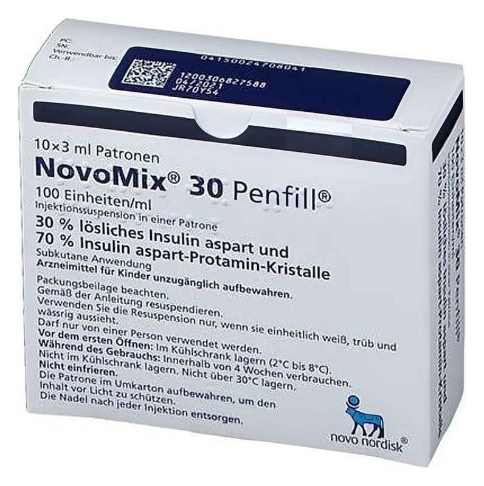

Novomix 30 Penfill 100 U/ml Enjeksiyonluk Süspansiyon İçeren Kartuş, 5 Adet

Ne için kullanılır
KT · Bölüm 1NovoMix®30 Penfill®, 30/70 oranında, hızlı etkili ve orta etkili bir modern insülindir (insülin analoğu). Modern insülin ürünleri insan insülinlerinin geliştirilmiş çeşitleridir.
NovoMix®30 Penfill®şeker hastalığı (diyabet) olan yetişkinlerde, adölesanlarda ve 10 yaş ve üzeri çocuklarda yüksek kan şekeri seviyesini düşürmek için kullanılır. Şeker hastalığı (diyabet) vücudunuzun kan şekeri seviyesini kontrol etmek için yeterli insülin üretmediği bir hastalıktır.
NovoMix®30 Penfill®, enjekte edildikten 10-20 dakika sonra kan şekerinizi düşürmeye başlayacak, enjeksiyondan sonra 1-4 saat arasında en fazla etki görülecek ve etkisi 24 saate kadar sürecektir.
Tip 2 şeker hastalığı (diyabet) tedavisinde NovoMix®30 Penfill®, diyabet tabletleri ve / veya şeker tedavisinde kullanılan (antidiyabetik) enjekte edilebilir ilaçlarla birlikte kullanılabilir.
NovoMix®30 Penfill®, enjeksiyonluk süspansiyon olarak sunulmaktadır. Karışmasını kolaylaştırmak için kartuş içerisinde bir adet cam top bulunmaktadır. Karışan sıvı, eşit oranda beyaz, bulanık ve sulu görünmelidir. Karıştıktan sonra homojen şekilde beyaz, bulanık ve sulu görünmüyorsa, insülini kullanmayınız.
Penfill®adı verilen, 3 mL’lik kartuşlar içinde kullanıma sunulmuştur. Bir kutunun içinde 5 adet kartuş bulunur.